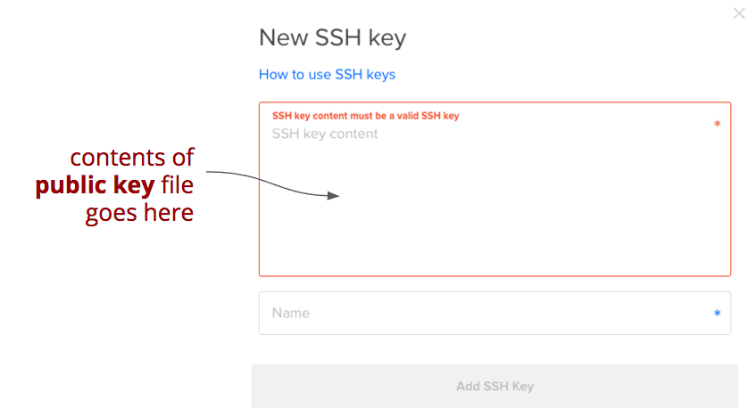
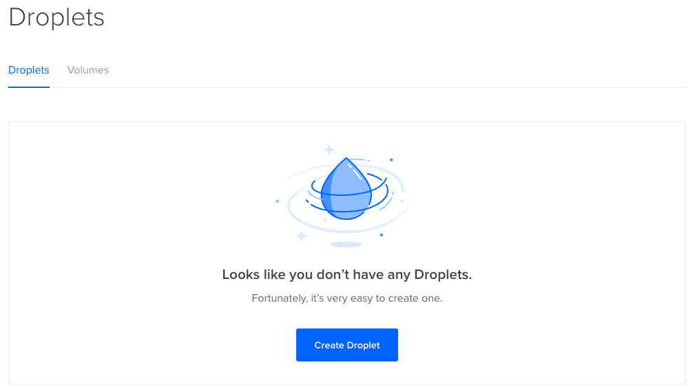
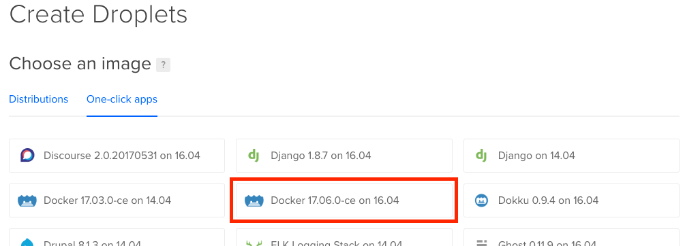
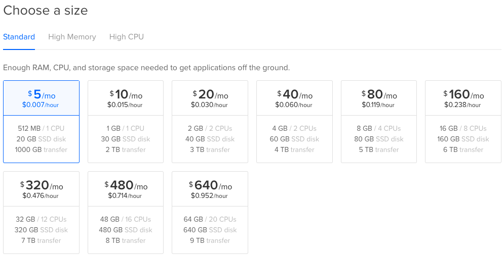

Now that you know how to build your own Docker containers, it's now time to learn how you can deploy those to a VM running in the cloud. This tutorial describes how to deploy to DigitalOcean, which is a cloud hosting service that offers reasonable pricing, a clean and easy-to-use UI, superb tutorials, and a powerful API.
DigitalOcean offers only a few core services, so it's much simpler than Amazon Web Services (AWS). Their core service is virtual machines, which they call "droplets" (a droplet in the vast digital ocean...get it?). They also offer load balancers and general file storage, but that's about it. Although they have a limited number of services, those services are relatively cheap: their entry-level droplets, which have 512MB of RAM and 20 GB of SSD storage, are only $5/month.
If you don't already have a DigitalOcean account, sign-up for one before proceeding. If you are taking INFO 344, contact your TA for a promo code that you can use to get enough credit to cover the costs related to the assignments.
Generating and Registering SSH Keys
When you create a VM in any cloud infrastructure, you need a way to connect to it via ssh as the root user so that you can perform administrative tasks. SSH stands for "secure shell," and to be secure it needs to authenticate you. SSH can do that in one of two ways: you can supply the root user's password (not recommended); or you create and setup SSH keys (recommended).
SSH keys are private/public key pairs, similar to the ones used in TLS. You can generate this key pair on your development machine, and add the public key to any new droplet you create. When you connect, the ssh command uses your private key (which remains on your development machine only) to encrypt a message, and the droplet uses your public key to verify that message. Since you should be the only person in possession of your private key, it knows that you are you, and the authentication succeeds.
Generate a Key Pair
To see if you already have an SSH key pair generated, use this command:
ls ~/.sshIf you see files named id_rsa and id_rsa.pub, you already have a key pair and you can skip to the next section.
If you get a "no such file or directory" error, you don't have a key pair generated yet, so use this command to generate one:
ssh-keygen -t rsaYou will be prompted as to whether you want to add a passphrase to the private key. This is an added security measure you may want to use, but beware that you'll have to type this passphrase every time you use the key. Enter the passphrase, or just hit return to use no passphrase.
You'll see some output telling you where the new "identification" (private key) and public key files were saved, as well as something that looks a bit like a QR code. Now we need to register the public key with our DigitalOcean account.
Register your Public Key
After signing up for an account (or signing in to an existing one), click on your Avatar in the top right corner and choose "Settings" from the drop-down menu. Then click on the "Security" link in the left-side navigation area. Or you can jump to this screen directly.
Under the "SSH keys" section, choose the "Add SSH Key" button. You'll see a dialog that looks like this:

You need to copy the contents of your public key (not your private key) into the first box. By default, the public key is stored in the file ~/.ssh/id_rsa.pub. You can open that in your favorite text editor, or you can just dump it to your terminal using this command:
cat ~/.ssh/id_rsa.pubCopy the contents of that file to your clipboard and paste it into the large box labeled "SSH key content." If you're on a Mac, you can copy it to the clipboard from the terminal using this command
# MacOS only
cat ~/.ssh/id_rsa.pub | pbcopyOn Windows, pipe the output to the clip command instead:
# Windows only
cat ~/.ssh/id_rsa.pub | clipOn Linux you can install and pipe the output to the xclip command:
# Linux only
sudo apt-get install -y xclip
cat ~/.ssh/id_rsa.pub | xclip -selection cAfter you paste in the contents of the file, enter a name in the second box that describes the computer you are currently using (e.g., "Laptop" or "Home PC"). Since the private key will remain on this computer only, you should use something that identifies this particular computer.
You can add multiple SSH keys to your account, one for each computer you use. When you create a droplet, you can add all of the registered public keys to the new droplet, so that you can connect to it from any of your computers.
Creating a Droplet
Return to your Droplets list, which will be empty. Click on the big blue button labeled "Create Droplet":

DigitalOcean has several pre-built images you can use for these droplets, including all the commonly-used Linux distros. But if you want to run a Docker container, there's a special "One-Click app" that already has Docker pre-installed on an Ubuntu Long-Term Support (LTS) distro. The specific version numbers vary over time, but it will be called something like "Docker x.x.x-ce on x.x." In the screen shot below, it's highlighted in red:

You can of course choose any base Linux distro and install Docker yourself, but this one-click app a convenient way to get up-and-running quickly.
After selecting the image, the next section of the page lets you choose the size of your VM. It will default to selecting the $20/month VM, so make sure you select the cheapest one instead for this tutorial.

You don't need any additional block storage, so you can skip the next section. The following section lets you choose which data center you want your VM to run in. You should choose a data center that is geographically close to your target users and/or yourself. Although the Web often feels instantaneous, geography still matters: a few hundred milliseconds of extra latency can become noticeable if your application makes a lot of requests.
You can also skip the Additional Options section for now. This allows you to add various options like IPv6 support, automated backups, monitoring, and private networking.
The following section allows you to select the SSH Key you registered in the previous section. Choose the SSH key(s) you registered, or you can register a new one if you skipped that previous section. Adding SSH keys to your droplet is a very good idea: your new droplet will be accessible only to you, as only you have the associated private key. If you don't add an SSH key, DigitalOcean will generate a random root user password and send it to you via email. Because email is not a terribly secure medium, it's best to use SSH keys instead.
In the final section you can adjust the number of droplets you are creating (leave at 1 for now) and override the host name that DigitalOcean generated for you (you can leave it as is for now). Click the big "Create" button to create your droplet.
Connecting to Your Droplet
You should see your new droplet in your droplets list, and once it says that the droplet is ready, copy the droplet's IP address to your clipboard. Then in a terminal window use this command to connect to it, replacing ip-address with your droplet's IP address:
ssh root@ip-addressYou may see a message that the host is not yet in your known hosts list, and you can enter yes to add it to that list. You should then see a new prompt, which is a new bash shell running on your new droplet. You can now type commands as if you were directly connected to that droplet. Everything you type will be sent to the server and executed there.
Verifying the Firewall
The firewall should be enabled by default, but to verify this, enter this command:
ufw statusIf it reports a status of "active" you are good to go. If it reports that the firewall is not enabled, you can enable it using these commands:
ufw allow OpenSSH
ufw enableUse ufw status one more time to ensure that the firewall is now active.
Running Your Docker Containers
Docker should already be pre-installed, so to run any Docker container, simply use the docker run command that was discussed in the Docker tutorial. For example, to run your example web site container image you built during that tutorial, use this command
docker run -d -p 80:80 --name exsite your-dockerhub-name/examplewebsiteDocker will automatically open any published ports on the firewall, so your website should now be live on the Web. You can test it by requesting the URL http://ip-address where ip-address is the IP address of your droplet.
Associating a Domain Name
If you want to associate a domain name you've purchased with your DigitalOcean droplet refer to their excellent How to Set Up a Host Name with DigitalOcean tutorial. The Domain Name Server fields on your domain registrar may be somewhat difficult to find, but every registrar should let you set those.
Script It with the DigitalOcean CLI
The DigitalOcean UI is actually just a simple web client that uses their public API to do all of the work. You can use that API from your own programs, but there's also a handy CLI you can use from bash scripts. This CLI is called doctl, and it's written in Go!
If you have Go installed, use go get to download and install doctl:
go get github.com/digitalocean/doctl/cmd/doctlTo verify the installation, run doctl version. If you get a version number, all is OK. If you get a command not found error, something went wrong. Ensure you have Go intalled and that you setup your Go Workspace correctly.
The doctl CLI uses the public API, so you must first generate an access token for your account, and then register that token with the tool using this command:
doctl auth initYou can now use doctl to do anything you could have done through DigitalOcean's User Interface. For example, to list your current droplets, use this command:
doctl compute droplet listTo list your registered SSH keys, you can use this command:
doctl compute ssh-key listTo create a new droplet from the Docker on Ubuntu image, you can use a command like this:
doctl compute droplet create my-droplet-name \
--image docker-16-04 \
--region nyc1 \
--size 512mb \
--ssh-keys ...ssh key fingerprint... \
--waitThe best documentation for this CLI is actually in the tool itself. Use doctl help to list all of the available subcommands, and if you want help with any particular subcommand, add the subcommand name after doctl help (for example, doctl help compute). You can keep going to see options for final commands: for example doctl help compute droplet create.
Using this tool, you can easily write bash scripts to create droplets and manage domains. To run a script on a newly-created droplet, you can either use the --user-data flag when creating the droplet, or you can invoke the script after the droplet is running using ssh (replace ip-address with your droplet's IP address):
ssh -oStrictHostKeyChecking=no root@$ip-address 'bash -s' < script-to-run-on-droplet.shThe -oStrictHostKeyChecking=no flag skips the part where ssh prompts you to add a new host to the list of known hosts. When scripting, you don't want programs prompting you for input.